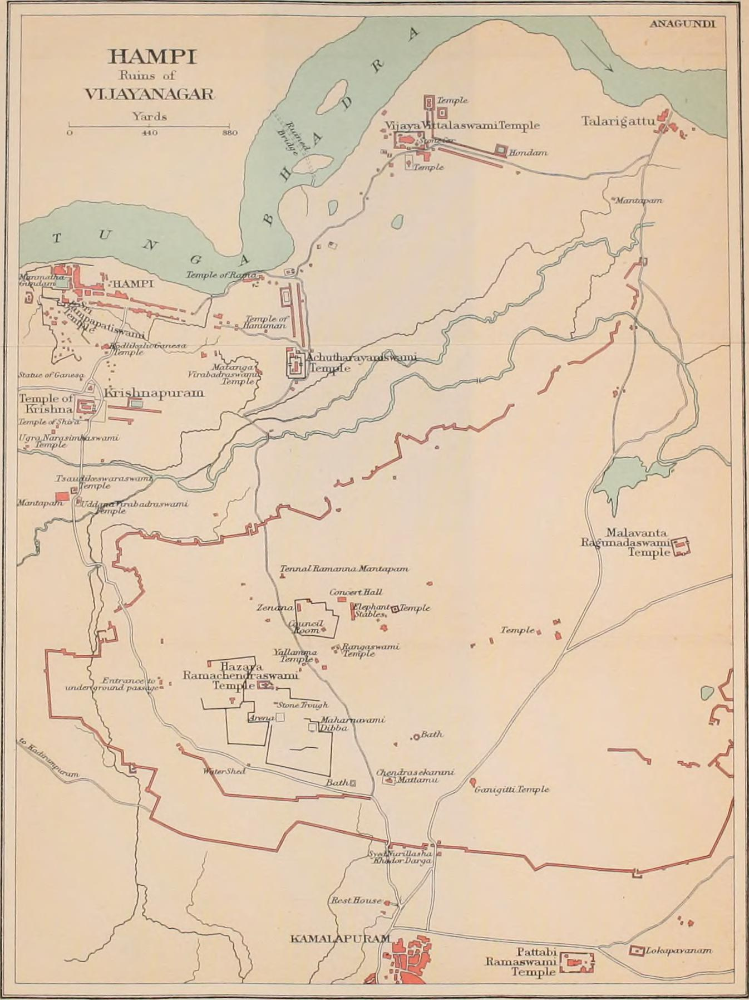

← Home Ground: Bombay and the Deccan

The handbook
John Murray’s Handbook for Travellers in India, Burma and Ceylon descended from the Murray Indian handbooks begun in 1859, took its combined title in 1891 and ran through editions to the 1970s, and by 1911 it was the standard English guide to the subcontinent: a thick red volume arranged by railway route, with a plan for every city and site the traveller was expected to see. Hampi was reached from Hospet on the Madras and Southern Mahratta Railway. The plan shows what the Handbook’s text walks through: the Virupaksha, here ‘Pampapatiswami’, temple and the Hampi bazaar on the river at the left; the Vitthala temple with its stone car to the north-east; the Krishna temple and Krishnapuram; the Hazara Rama temple inside the royal enclosure, with the Zenana, the Elephant Stables and the Mahanavami Dibba beside it; and the modern villages of Kamalapuram and Anegundi at the edges. The great enclosure walls, in red, thread through the whole sheet.
A city surveyed as ruins
The plan rests on government work rather than the publisher’s own. Vijayanagara had been measured by the Madras Survey in the nineteenth century and studied by the Archaeological Survey in the decade before this edition; Robert Sewell’s A Forgotten Empire (1900), which translated the Portuguese accounts of Paes and Nunes and carried a plan of the site, had made Hampi a place that an educated visitor was expected to know. The Handbook’s cartographer reduced that survey to what a walker needed: names, paths, the river, the walls and a bar of yards. The names are the Anglo-Indian forms of the time, ‘Talarigattu’ and ‘Achutharayaswami’, fixed by the Survey and repeated by every guide since.
Scale
This is the closest the collection comes to the ground: a scale bar of 880 yards where the Vandermaelen sheets of Room 04 manage a province and the Bartholomew plates a presidency. At this scale a map can only be of a place already known to its readers, and the place was known as a ruin. No European map in the collection shows Vijayanagara as a living city; the sixteenth-century plates of Room 01 carry ‘Bisnagar’ or ‘Narsinga’ as a name, and by the time the scale reaches a temple the empire had been gone for three and a half centuries.
The gaze
The handbook’s eye is the tourist’s, which is also the antiquary’s. It looks at the Deccan as a sequence of sites connected by railway, each with a plan, a route and a list of things to be seen; and it sees Vijayanagara, as Sewell’s title had taught it to, as a forgotten empire, something to be recovered from ruins rather than remembered from rule. The walls are drawn in red because they are the most visible thing on the ground, not because anyone still held them. The plan is the last of the collection’s Deccan maps in date and the smallest in extent, and it closes the room on the site where the Deccan timeline opens.
In the Deccan timeline
The founding of Vijayanagara (c. 1336–1346) · Virupaksha and the sacred centre (before 1500) · Vijayanagara, the city (c. 1500) · Domingos Paes describes Vijayanagara (c. 1520–1522) · Talikota, 1565 (January 1565)